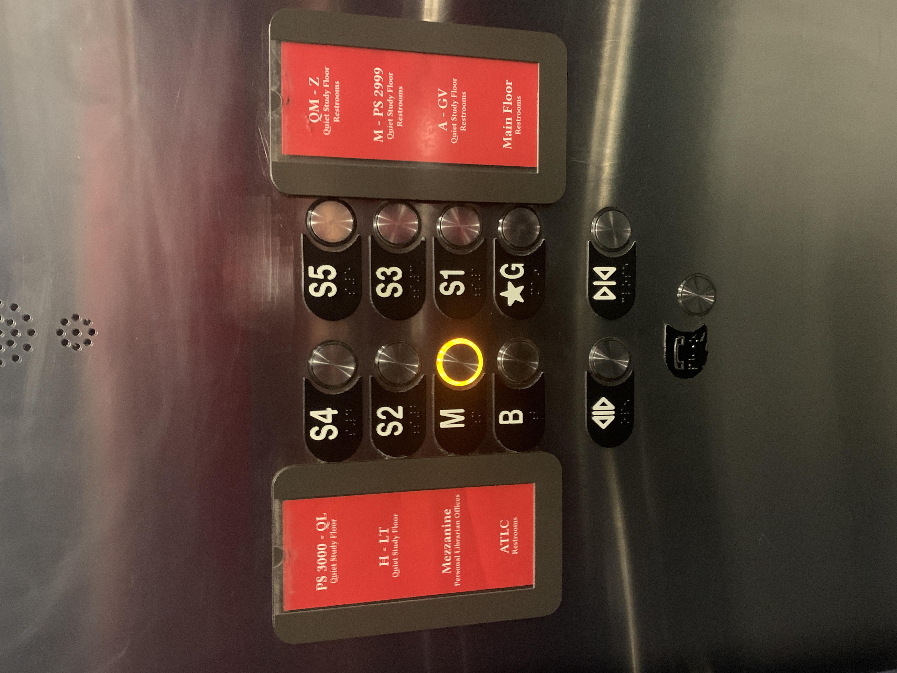
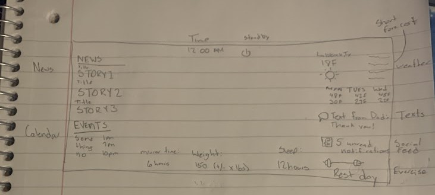

CS 3366 Project 1: Elevator Interface
My project is designed based on the Library stacks elevator as shown below.
Evaluation

Uses of the elevator
The most common use of an elevator interface:
- Requesting the elevator to go to another floor.
- Holding open the doors.
- Closing the doors early.
The less frequent use of an elevator is the call for assistance button.
The good
- The buttons are well spaced. The main buttons are clearly separated from the bottom three buttons.
- Each button has a clear label that lets you know where it will send you.
- The buttons provide feedback through a audible ding and a lit indicator after pressing the button.
The bad
- The assistance button is off center.
- Labels are unclear. What does S stand for? People may mix which button opens or closes the elevator doors.
- The cards on the side can be easily tampered or switched.
- The cards on the side are not blind-friendly (no braille).
The Redesign
Three changes were made:
- The cards and labels were merged to make each button's purpose more clear.
- Additional information on the labels for the assistance and open/close doors buttons.
- The button at the bottom was centered.
The following sketch was made before moving my project to processing.
